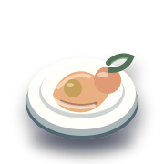

FOOD & SPESA
Organizza meglio ciò che mangi e compri.
Dalla dispensa alle ricette, dalla lista della spesa ai prezzi: scegli il bisogno e vai direttamente allo strumento più utile.
Prova: freezer, scadenze, ricette, lista, prezzi, pizza, budget…
Vai subito a
ORGANIZZA SENZA SPRECHI
Dal frigo alla lista della spesa.
Parti da quello che hai già, tieni d'occhio dispensa e freezer e prepara la spesa solo quando serve davvero.
OGNI GIORNO
DispensaScorte e scadenze più chiare.
RicetteIdee da ciò che hai in casa.
SpesaLista e prezzi sotto controllo.
PorzioniDosi senza conti a mano.
STRUMENTI PRINCIPALI
Le cose che servono più spesso
Organizzazione quotidiana, spesa e cucina.
STRUMENTI SPECIFICI
Calcoli, ricette e idee
Aprili quando hai un bisogno preciso.
Non trovo uno strumento con queste parole. Prova con “ricette”, “scadenze”, “prezzi” o “spesa”.